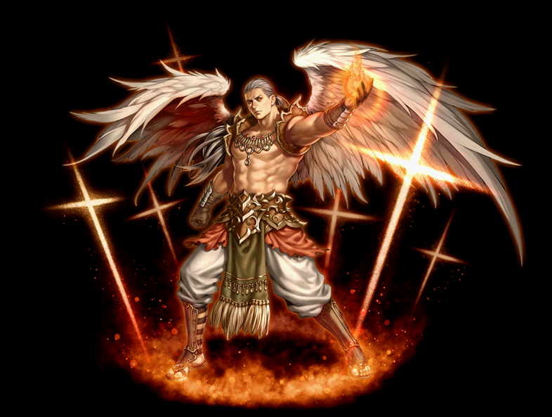

2020/02/19～ 追放天使 覚醒スキル一覧
2018/09/03 追放天使スキル改変後のデータ。
2020/02/19 状態異常に伴うスキル改変後のデータ。
[通常スキル]
ホーリーミッショナリー
セイントパニッシャー
スピリットガイド
ホーリーミッショナリー
| ホーリーミッショナリー | |||||||
|---|---|---|---|---|---|---|---|
 |
|||||||
| [専用パッシブ] 弱点把握 | |||||||
|
|
スキル説明 | ゴスペルキリグマの憑依バフ発生時に、同じスキル使用するとダメージ上昇。
違うスキルを使用すると新たに弱点把握が必要。 |
|||||
| スキル効果 |
同じスキルを使うとダメージ増加 (2回目の攻撃ダメージが100％増加。) |
||||||
セイントパニッシャー
| セイントパニッシャー | |||||||
|---|---|---|---|---|---|---|---|
|  | |||||||
| [専用パッシブ] 双翼の光 | |||||||
|
|
スキル説明 | 折れた翼の力を取り戻し、光属性の魔法攻撃力を増加させる。
|
|||||
| スキル効果 |
最小攻撃力が最大攻撃力の80%に固定される。 |
||||||
スピリットガイド
| スピリットガイド | |||||||
|---|---|---|---|---|---|---|---|
| [専用パッシブ] 天上の祝福 | |||||||
|
|
スキル説明 | 天上からの祝福により基本移動速度増加し、該当スキル習得時にスキル「郷愁」に追加効果が付与される。
|
|||||
| スキル効果 |
移動速度20％増加 郷愁にて物理攻撃・魔法攻撃増加の効果付与 |
||||||